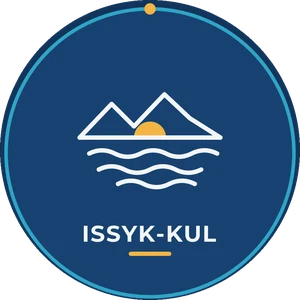
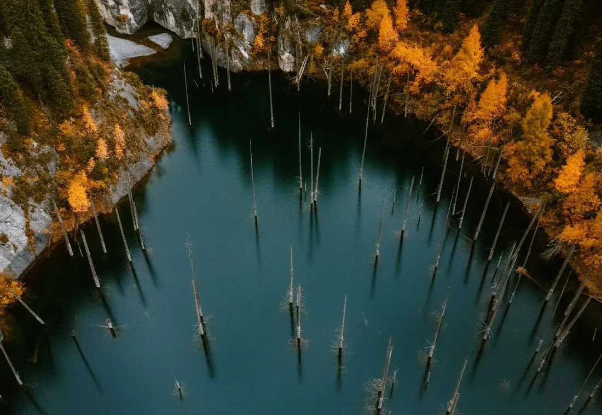
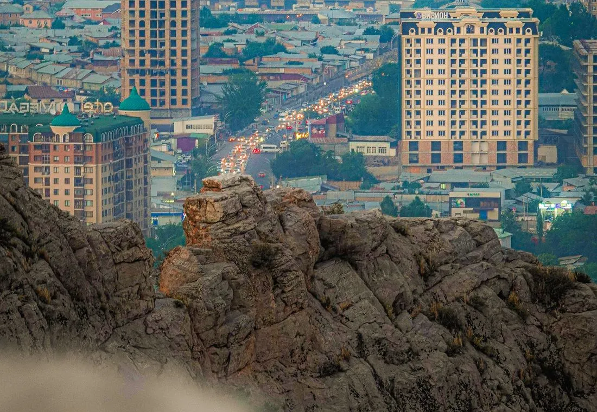

8 dagar🔒 Kommer snart
8 dagar🔒 Kommer snartUZ
Klassiska Uzbekistan
Tasjkent · Samarkand · Buchara · Chiva
Tasjkent, Samarkand, Buchara och Chiva på en resa
från… per person
Se resan →Privata resor och resor i små grupper genom Centralasien — turkosa kupoler, ökenläger, bergssjöar och varm gästfrihet. Vi ordnar allt, du bara reser.
Kombinera Centralasiens höjdpunkter på en enda resa — vi tar hand om gränser, transporter och guider.
Samarkand, Buchara och Chiva — Sidenvägens blå juveler, sammanbundna med snabbtåg.
Bergen kring Almaty, de röda väggarna i Charynkanjonen och den heliga staden Turkistan.
Alpsjöar, nomadjurtor, hästar på ändlösa betesmarker och stränderna vid Issyk-Kul.

Antika Pandzjakent, Chudzjand vid Syr-Darja och Pamir — världens tak.
Sex beprövade rutter i varje land — öppna en resa för att se kartan, dag-för-dag-programmet och priset.
8 dagar🔒 Kommer snartTasjkent, Samarkand, Buchara och Chiva på en resa
 5 dagar🔒 Kommer snart
5 dagar🔒 Kommer snartSidenvägens två juveler på fem dagar
 10 dagar🔒 Kommer snart
10 dagar🔒 Kommer snartFrån Chiva till Samarkand med en natt i ökenjurta
 7 dagar🔒 Kommer snart
7 dagar🔒 Kommer snartPilgrimsfärd till stora imamer och sufimästare
 15 dagar🔒 Kommer snart
15 dagar🔒 Kommer snartUzbekistan, Tadzjikistan, Kazakstan och Kirgizistan på 15 dagar
 4 dagar🔒 Kommer snart
4 dagar🔒 Kommer snart
5 dagar🔒 Kommer snartKanjoner och bergsjöar i sydöstra Kazakstan
 8 dagar🔒 Kommer snart
8 dagar🔒 Kommer snartAlmaty, sjöarna, Turkistan och Astana
 4 dagar🔒 Kommer snart
4 dagar🔒 Kommer snartPilgrimsfärd till den turkiska världens andliga huvudstad
 4 dagar🔒 Kommer snart
4 dagar🔒 Kommer snartHällristningar, färgglada berg och en sjungande dyn
 4 dagar🔒 Kommer snart
4 dagar🔒 Kommer snartDen futuristiska huvudstaden och ”Kazakstans Schweiz”
 7 dagar🔒 Kommer snart
7 dagar🔒 Kommer snartDen varma sjön, röda klippor, örnjägare och kanjoner
 5 dagar🔒 Kommer snart
5 dagar🔒 Kommer snartJurtor, hästar och högfjällssjön på 3 016 m
 9 dagar🔒 Kommer snart
9 dagar🔒 Kommer snartDet bästa av Kirgizistan på nio dagar
 6 dagar🔒 Kommer snart
6 dagar🔒 Kommer snartEn glaciärsjö och de varma källorna i Altyn-Arashan
 6 dagar🔒 Kommer snart
6 dagar🔒 Kommer snartEn karavanseraj av sten och nätter i jurtor

4 dagar🔒 Kommer snartEn 3 000 år gammal stad och den stora valnötsskogen
 5 dagar🔒 Kommer snart
5 dagar🔒 Kommer snartIskanderkul, Sju sjöarna och forntida Panjakent
 10 dagar🔒 Kommer snart
10 dagar🔒 Kommer snart”Världens tak” från Dusjanbe till Osj
3 dagar🔒 Kommer snartEn kort utflykt till Fanbergens sjöar
8 dagar🔒 Kommer snartSidenvägsstaden och Fanbergens sjöar
 6 dagar🔒 Kommer snart
6 dagar🔒 Kommer snartHissar, Istaravsjan, Chudzjand och sogdiska Panjakent
 7 dagar🔒 Kommer snart
7 dagar🔒 Kommer snartTältvandring mellan smaragdgröna sjöar
Hittar du inte din resa? Vi skräddarsyr rutter för par, familjer och grupper.
För ensamresenärer och par från alla länder: fasta datum, engelsktalande guider, allt ordnat.
Boka en enskild tjänst – transfer, guide, tågbiljetter eller hotell – utan att köpa en hel resa.
Välj platser, nätter, hotell, transport och guide — se rutten på kartan och ett direkt prisförslag.
Börja bygga →


Inte bara monument. Det är plov från en jättelik kazan, morgnar på basaren och te med nya vänner.


Vårt team bor i Uzbekistan och känner varje gata, guide och dold pärla.
Hotell, tåg, transfer, guider och entréer — i ett tydligt paket.
Halalmat, tid för bön och ett bekvämt tempo för familjer.
Engelsk- och rysktalande guider; andra språk på förfrågan.
Inga dolda avgifter — du ser exakt vad som ingår innan du bokar.
En riktig person på WhatsApp eller Telegram under hela resan.
Under 2,5 år har teamet på Moviy Travel ordnat resor för fler än 10 000 resenärer. Moviy Nomad tar samma team, guider och chaufförer till gäster från hela världen – med resor i Uzbekistan, Kazakstan, Kirgizistan och Tadzjikistan.
✓Licensierad researrangör — Turistkommittén i Republiken Uzbekistan, licens nr 887333
Se våra resor på Instagram: @moviy_travel58 000 följare · 600+ inlägg med riktiga resor→Berätta om datum, antal resenärer och önskemål på WhatsApp eller Telegram.
Vi tar fram ett program dag för dag med ett tydligt pris för er grupp.
Vi möter er på flygplatsen och tar hand om resten.
Riktiga meddelanden från våra resenärers gruppchatt, översatta från uzbekiska.
“Tack för allt ert arbete och er omtanke. Jag har bestämt mig för att resa en gång om året – med er, tillsammans med vänner och familj.”
“Utmärkt service: vår chaufför Nodirbek behandlade alla som familj, och den långa vägen kändes inte alls lång. Funderar du fortfarande – åk, du kommer inte att ångra dig.”
“Jag åkte med mina föräldrar och de älskade det så mycket att vi redan planerar nästa år. Först tvekade jag – det finns så många resebyråer nu – men det var verkligen fantastiskt.”
“Det blev ännu bättre än vi väntat oss. Att samla 500 personer är ingen småsak. Ordna gärna fler sådana resor!”
“Den senaste veckan var verkligen oförglömlig – kanske för att det var min första resa. Jag kom hem med fina intryck och minnen av underbara människor.”
“Stort tack till Ilyosbek och hans team – de jobbade ärligt för att vi skulle kunna vila och njuta. Vi fick många nya vänner i gruppen.”
Bilder och intryck som våra resenärer har delat. Har du rest med oss? Lägg till din!
Inga berättelser än – bli först med att dela.
Medborgare i många länder kan besöka Uzbekistan, Kazakstan och Kirgizistan utan visum eller med ett enkelt e-visum. Berätta vilket land ditt pass är utfärdat i så kontrollerar vi de aktuella reglerna.
Våren (april–juni) och hösten (september–oktober) är perfekta för städerna. Sommaren är säsongen för bergen och sjöarna i Kirgizistan och Tadzjikistan.
Ja. Vi planerar privata resor för par och familjer samt gruppresor och program för resebyråer.
Det mesta av maten i regionen är halal. Vi kan också planera programmet efter bönetider och besök på heliga platser.
Skriv till oss på WhatsApp eller Telegram. När du godkänt programmet bekräftar vi bokningen och skickar betalningsuppgifter.
Ja. Vi erbjuder mottagningstjänster och partnerpriser för byråer och grupper.
Välj det sätt som passar dig bäst — vi svarar med idéer, program och pris.
+998 99 980 42 14 · Safina Qozoqboyeva